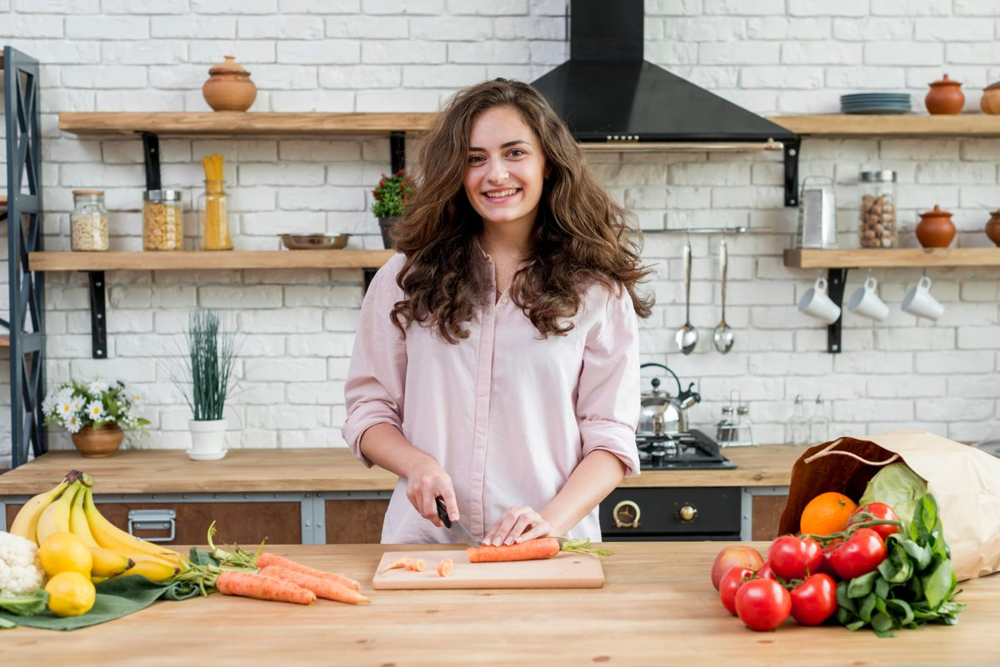
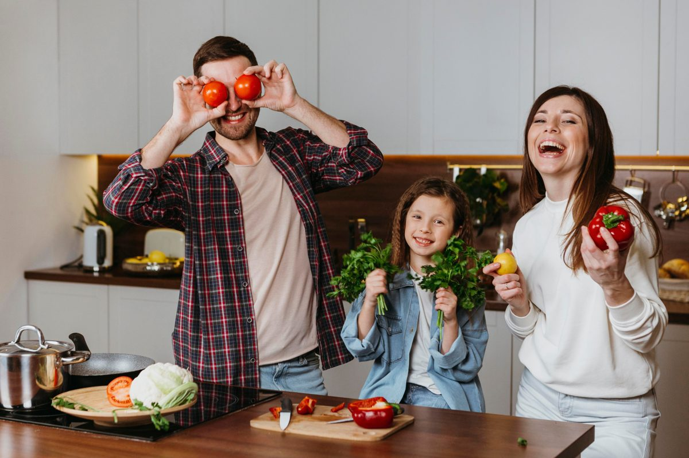

Our mission
Help more people cook nourishing meals, more often.
Healthy Recipe Finder was created to prove that healthy eating can be convenient, affordable, and genuinely delicious.
We showcase quick, whole-food dishes that anyone can master—no fancy equipment, no ultra-processed shortcuts—just honest ingredients and straightforward steps.

Why we exist
Our food philosophy
Beyond the plate
We believe food is a catalyst for community and well-being. By sharing approachable recipes, we hope to:
- Encourage family dinners and social cooking.
- Reduce reliance on single-use packaging and delivery waste.
- Spark curiosity about seasonal produce and local agriculture.
